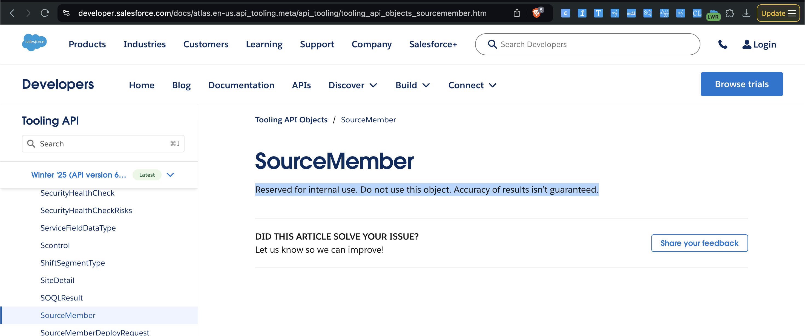

Introduction
In this book, we discuss about the admin tools for Salesforce Administrator. This book is a companion to the Salesforce Development Notes
Admin changes implementor App
The App is designed to handle administrative configuration changes in a Salesforce environment and automate the process of tracking, converting, and deploying these changes using version control and pipelines. The process begins with either an admin or designer user making configuration changes in a copy of the production environment and then moves towards generating metadata for deployment. This app can handle changes in two different ways, presented as Option 1 and Option 2 in the flowchart.
Overview of the App
The app revolves around automating the retrieval, packaging, and deployment of changes made in a Salesforce production copy. The process ensures that any configuration changes made by admin or designer users are properly tracked and deployed to other environments through version control systems and pipelines. The app uses Salesforce's Metadata API to generate the necessary files for deployment, and then those files are committed to a Git repository for versioning and further deployment.
Main Components of the Application:
-
Admin/Designer User: The admin or designer users are responsible for making configuration changes in a Salesforce sandbox, which is a copy of the production environment.
-
Production Copy: A clone of the production environment where the actual changes are made. This could be a sandbox or staging environment where the modifications are tested before moving into production.
-
Options for Change Tracking:
- Option 1: Admin or designer users manually keep track of the changes they made. This includes tracking the asset name (e.g.,
Amount2__c) and asset type (e.g.,CustomField). - Option 2: The system automatically retrieves a list of changes using Salesforce’s Tooling API, particularly the
SourceMemberobject, which can capture changes to metadata such as fields, objects, and layouts.
- Option 1: Admin or designer users manually keep track of the changes they made. This includes tracking the asset name (e.g.,
-
package.xml Generator: This component generates the
package.xmlfile, which is required for Salesforce Metadata API deployment. Thepackage.xmlfile lists the metadata types and components that need to be retrieved, converted, or deployed. -
Metadata Conversion (sf force mdapi convert): The changes listed in the
package.xmlfile are converted using Salesforce's command-line interface (CLI), specifically themdapi convertcommand, which transforms metadata into a deployable source format. -
Git Committer: Once the metadata is converted, the changes are committed to a Git repository, ensuring version control and enabling collaborative workflows.
-
Pipelines: The changes are pushed through deployment pipelines that handle the movement of code and metadata to main orgs (like ST).
Option 1: Manual Tracking of Changes
In Option 1, admin or designer users are responsible for manually keeping a list of the changes they made. For each change, they would note down:
- Asset Name: The name of the metadata component that was changed, such as a custom field (
Amount2__c). - Asset Type: The type of metadata component, such as
CustomField,CustomObject, etc.
Once the list of changes is compiled, it is passed into the package.xml generator, which creates a deployment package based on the changes the user tracked. From here, the changes are converted, committed to Git, and pushed through the deployment pipeline.
Pros of Option 1:
- More Control: Users have complete control over which changes they want to track and deploy. This is particularly useful when only a subset of changes needs to be deployed to production.
- Less Overhead: If there are only a few changes, the process can be quicker, as the user only tracks the relevant modifications.
- Selective Deployment: Users can choose specific changes to be packaged and deployed, allowing for more targeted updates.
Cons of Option 1:
- Human Error: Since this process relies on manual tracking, there is a higher chance of missing important changes or including unnecessary ones.
- Time-Consuming: Manually tracking changes can be tedious, especially when multiple or complex modifications are made across different metadata components.
- Less Automation: This method lacks the automation provided by Option 2, meaning there is more room for oversight and delays.
Option 2: Automated Change Tracking Using the Tooling API
In Option 2, the system uses Salesforce’s Tooling API, specifically the SourceMember object, to automatically detect and retrieve the list of changes made in the production copy. The Tooling API provides detailed information about the metadata changes, making this process more automated.
The changes retrieved via the Tooling API are fed into the package.xml generator, and the process continues with metadata conversion, Git commits, and deployment through pipelines.
Pros of Option 2:
- Automation: This option eliminates the need for manual tracking of changes, reducing the possibility of human error.
- Time-Saving: Automated tracking is faster, especially when there are many changes to process, as the Tooling API can quickly gather all the modifications.
- Accuracy: Since the system is responsible for tracking changes, there is less chance of missing any updates, ensuring that all relevant metadata changes are included.
- Consistency: This method ensures that all changes are captured uniformly, reducing discrepancies in the deployment process.
Cons of Option 2:
- Overhead: Automatically tracking all changes may result in more metadata being captured than necessary. In some cases, the user might only want to deploy specific changes, and additional steps may be required to exclude irrelevant ones.
- Dependency on API: This method is dependent on the Salesforce Tooling API. If there are issues with the API or limitations in retrieving certain metadata types, the process could be interrupted or incomplete.
- Complexity: The automation process can be more complex to set up initially, especially if specific filters or configurations are needed to capture only the desired changes.
package.xml Generator and Metadata Conversion
In both options, the app generates a package.xml file based on the changes tracked (either manually in Option 1 or automatically in Option 2). The package.xml file serves as a blueprint for the metadata that needs to be deployed. The app then uses the Salesforce CLI to convert these changes into the appropriate format using the sf force mdapi convert command.
Git Committer and Pipelines
After the metadata is converted, the app commits the changes to a Git repository. This ensures that the metadata changes are version-controlled and can be tracked or rolled back if needed. The changes are then pushed through deployment pipelines, which handle the process of deploying the changes to various environments (e.g., testing, staging, or production).
Conclusion
This app provides a flexible approach to tracking and deploying Salesforce configuration changes. Both Option 1 and Option 2 have their own use cases, and the choice between them depends on the specific requirements of the deployment process.
- Option 1 offers more control and flexibility but requires manual effort, making it more prone to human error.
- Option 2 is more automated and efficient, ensuring that all changes are captured, but it may introduce additional overhead by including unnecessary changes.
-
The API used in this option is now changed to internal use only
-

-
This makes option-2 unsupportable.
-
In environments where changes are frequent and complex, Option 2 would likely be the preferred approach due to its automation and accuracy. However, for smaller teams or specific, targeted deployments, Option 1 offers a simpler and more controlled process.